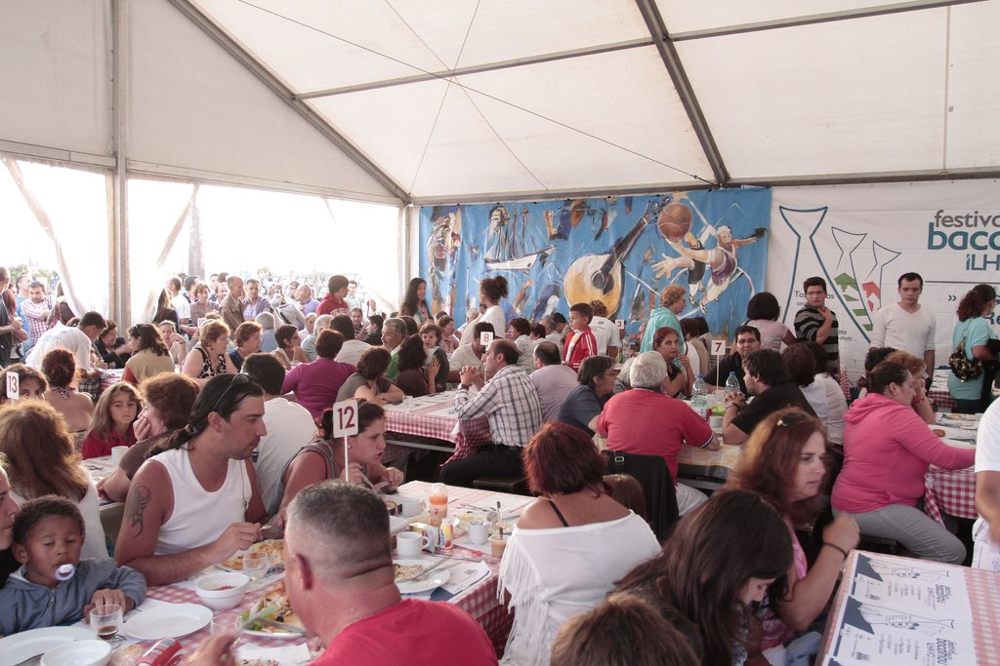

Descrição
Participei no Festival do Bacalhau x NEGE como voluntário no serviço de mesas e no atendimento ao público, com o objetivo de apoiar a angariação de fundos para atividade desportiva.
Competências desenvolvidas
Atendimento
Contacto com o público
Serviço de mesas e interação com visitantes num contexto movimentado e exigente.
Organização
Ritmo de trabalho
Gestão de tarefas em equipa, com necessidade de rapidez, atenção e colaboração constante.
Comunidade
Angariação de fundos
Contributo para uma iniciativa associada ao apoio de atividade desportiva.
Fotografias


